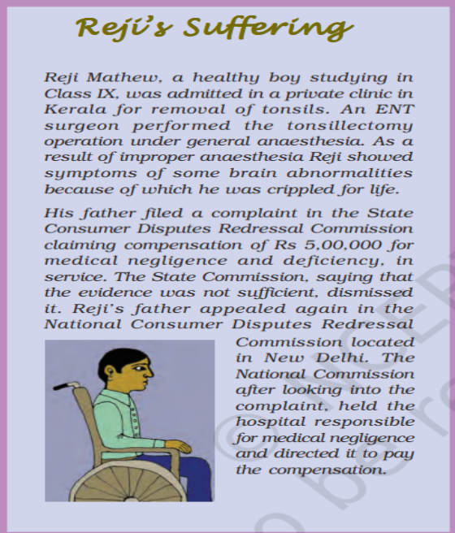
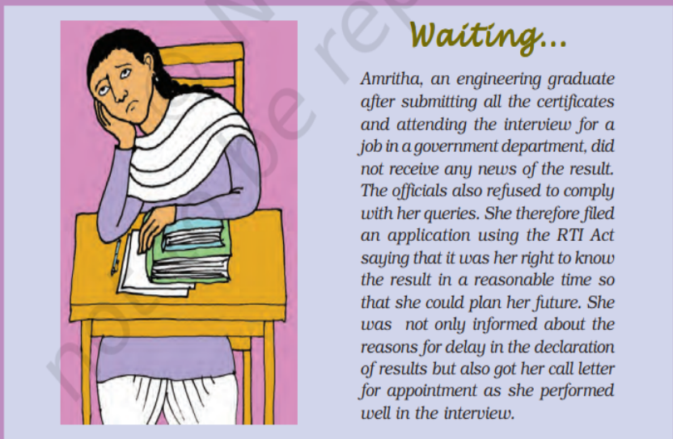
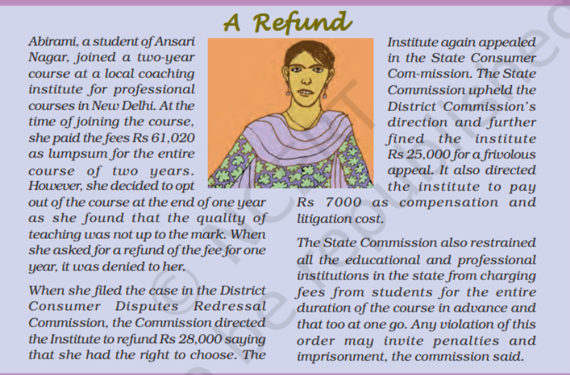

1.Introduction
A simple definition of consumer awareness is the act of ensuring that the buyer or customers are aware of the information on products, goods, services, and consumer rights. It is crucial for consumers to be informed so that they can choose wisely and at the appropriate moment. Consumer awareness and rights will be thoroughly covered in this essay.
People pay a set amount for products and services to satiate their endless demands. But what should one do if the items and services they have purchased turn out to be of poor quality, overpriced, of inadequate number, etc? Instead of feeling satisfied in these circumstances, the customers frequently feel defrauded by the vendors who provided the goods and services. Consumer awareness is key in this situation.
2.How are consumers exploited in the marketplace
We participate in the market both as producers and consumers. As producers of goods and services we could be working in any of the sectors discussed earlier such as agriculture, industry, or services. Consumers participate in the market when they purchase goods and services that they need. These are the final goods that people as consumers use.
For example, moneylenders in the informal sector adopt various tricks to bind the borrower:
- They could make the producer sell the produce to them at a low rate in return for a timely loan.
- They could force a small farmer to sell her land to pay back the loan
Similarly, many people who work in the unorganised sector have to work at a low wage and accept conditions that are not fair and are also often harmful to their health. To prevent such exploitation, we have talked of rules and regulations for their protection. There are organisations that have struggled for long to ensure that these rules are followed.
Likewise, rules and regulations are required for the protection of the consumers in the marketplace. Individual consumers often find themselves in a weak position. Whenever there is a complaint regarding a good or service that had been bought, the seller tries to shift all the responsibility on to the buyer. Their position usually is – “If you didn’t like what you bought, please go elsewhere”. As if the seller has no responsibility once a sale is completed! The consumer movement, as we shall discuss later, is an effort to change this situation.
Exploitation in the marketplace happens in various ways. For example, sometimes traders indulge in unfair trade practices such as when shopkeepers weigh less than what they should or when traders add charges that were not mentioned before, or when adulterated/defective goods are sold.
Markets do not work in a fair manner when producers are few and powerful whereas consumers purchase in small amounts and are scattered. This happens especially when large companies are producing these goods. These companies with huge wealth, power and reach can manipulate the market in various ways. At times false information is passed on through the media, and other sources to attract consumers. For example, a company for years sold powder milk for babies all over the world as the most scientific product claiming this to be better than mother’s milk. It took years of struggle before the company was forced to accept that it had been making false claims. Similarly, a long battle had to be fought with court cases to make cigarette manufacturing companies accept that their product could cause cancer. Hence, there is a need for rules and regulations to ensure protection for consumers.
3.Enactment of COPRA 1986
The Consumer Protection Act,1986 (COPRA) was an Act by the Parliament of India elected to protect the interests of consumers in India.It was replaced by the Consumer Protection Act, 2019. It was made for the establishment of consumer councils and other authorities for the settlement of consumer's grievances and matters connected with it. The act was passed in Assembly in October 1986 and came into force on December 24, 1986. The statute on the right was made before this COPRA act 1986.
Significance of the Act
This Act is regarded as the 'Magna Carta' in the field of consumer protection for checking unfair trade practices, ‘defects in goods’ and ‘deficiencies in services’ as far as India is concerned. It has led to the establishment of a widespread network of consumer forums and appellate courts all over India. It has significantly impacted how businesses approach consumers and have empowered consumers to a greater extent.
Consumer Protection Council
Consumer Protection Councils are established at the national, state and district level to increase consumer awareness.They guide consumers on how to file cases in the Consumer Disputes Redressal Commissions.
Various Consumer Organizations
To increase the awareness of consumers, there are many consumer organisations and NGOs that have been established. Consumer Guidance Society of India (CGSI) was the first consumer organization established in India in 1966; It was followed by many others such as:
- Consumer Education And Research Centre (Gujarat)
- Bureau Of Indian Standards
- Federation Of Consumer Organisation In Tamil Nadu
- Mumbai Grahak Panchayat
- Consumer Voice (New Delhi)
- Legal Aid Society (Kolkata)
- Akhil Bhartiya Grahak Panchayat
- The Consumers Eye India.
- United India Consumer's Association.
Consumer Disputes Redressal Agencies
- District Consumer Disputes Redressal Commission (DCDRC): Also known as the "District Commission" established by the State Government in each district of the State. The State Governments may establish more than one District Forum in a district. It is a district-level court that deals with cases valuing up to ₹10 million (US$130,000).
- State Consumer Disputes Redressal Commission (SCDRC): Also known as the "State Commission" established by the State Government in the State. It is a state-level court that takes up cases valuing less than ₹100 million (US$1.3 million)
- National Consumer Disputes Redressal Commission (NCDRC): Established by the Central Government. It deals with matters of more than ₹100 million.
Objectives of the central council
The objectives of the Central Council are to promote and protect the rights of the consumers such as:-
- The right to be protected against the marketing of goods and services which are hazardous to life and property.
- The right to be informed about the quality, quantity, potency, purity, standard and price of goods or services, as the case may be to protect the consumer against unfair trade practices.
- The right to be assured, wherever possible, access to a variety of goods and services at competitive prices.
- The right to be heard and to be assured that consumer's interest will receive due consideration at appropriate forums.
- The right to seek redressal against unfair trade practices or restrictive trade practices or unscrupulous exploitation of consumers
- The right to consumer education
Jurisdiction/Three Tier System of Council Courts
-->Jurisdiction of District Forum
- Subject to the other provisions of this Act, the District Forum shall have jurisdiction to entertain complaints where the value of the goods or services and the compensation, if any, claimed does not exceed rupees one crore.
- A complaint shall be instituted in a District Forum within the local limits of whose jurisdiction:-
- the opposite party or each of the opposite parties, where there are more than one, at the time of the institution of the complaint, actually and voluntarily resides or carries on business or has a branch office or personally works for gain, or
- any of the opposite parties, where there are more than one, at the time of the institution of the complaint, actually and voluntarily resides, or carries on business or has a branch office, or personally works for gain, provided that in such case either the permission of the District Forum is given, or the opposite parties who do not reside, or carry on business or have a branch office, or personally work for gain, as the case may be, acquiesce in such institution; or
- the cause of action, wholly or in part, arises.
Consumer courts do not have jurisdiction over matters where services or goods were bought for a commercial purpose.
-->Jurisdiction of State Commission
Subject to the other provisions of this Act, the State Commission shall have jurisdiction:-
- to entertain:
- complaints where the value of the goods or services and compensation, if any, claimed exceeds rupees one crore but does not exceed rupees ten crore; and
- appeals against the orders of any District Forum within the State; and
- to call for the records and pass appropriate orders in any consumer dispute
-->Jurisdiction of National Commission
Subject to the other provisions of this Act, the State Commission shall have jurisdiction:-
- to entertain:
- complaints where the value of the goods or services and compensation, if any, claimed exceeds rupees ten crore; and
- appeals against the orders of any State mayor; and
- to call for the records and pass appropriate orders in any consumer dispute which is pending before or has been decided by any State Commission. However, the Supreme Court of India has held that the jurisdiction of National Commission under Revision Jurisdiction is very limited and can only be exercised when State Commission exceeds its jurisdiction, fails to exercise its jurisdiction or there is material illegality in the order passed by State Commission.
4.Six Rights of Consumers with examples and case study
- Right to Safety
Means right to be protected against the marketing of goods and services, which are hazardous to life and property. The purchased goods and services availed of should not only meet their immediate needs, but also fulfil long term interests.
Before purchasing, consumers should insist on the quality of the products as well as on the guarantee of the products and services. They should preferably purchase quality marked products such as ISI,AGMARK, etc
- Right to be Informed
Means right to be informed about the quality, quantity, potency, purity, standard and price of goods so as to protect the consumer against unfair trade practices.
Consumer should insist on getting all the information about the product or service before making a choice or a decision. This will enable him to act wisely and responsibly and also enable him to desist from falling prey to high pressure selling techniques.
 - Right to Choose
Means right to be assured, wherever possible of access to variety of goods and services at competitive price. In case of monopolies, it means right to be assured of satisfactory quality and service at a fair price. It also includes right to basic goods and services. This is because unrestricted right of the minority to choose can mean a denial for the majority of its fair share. This right can be better exercised in a competitive market where a variety of goods are available at competitive prices
- Right to be Heard
Right to be Heard Means that consumer's interests will receive due consideration at appropriate forums. It also includes right to be represented in various forums formed to consider the consumer's welfare.
The Consumers should form non-political and non-commercial consumer organizations which can be given representation in various committees formed by the Government and other bodies in matters relating to consumers.
 - Right to Seek redressal
Means right to seek redressal against unfair trade practices or unscrupulous exploitation of consumers. It also includes right to fair settlement of the genuine grievances of the consumer.
Consumers must make complaint for their genuine grievances.Many a times their complaint may be of small value but its impact on the society as a whole may be very large. They can also take the help of consumer organisations in seeking redressal of their grievances.
- Right to Consumer Education
Means the right to acquire the knowledge and skill to be an informed consumer throughout life.Ignorance of consumers, particularly of rural consumers, is mainly responsible for their exploitation. They should know their rights and must exercise them. Only then real consumer protection can be achieved with success.

5.Redressal Process of Consumer Forum
Means right to seek redressal against unfair trade practices or unscrupulous exploitation of consumers. It also includes right to fair settlement of the genuine grievances of the consumer. Consumers must make complaint for their genuine grievances.
Demerits of Consumer Redressal Process :
- The Consumer Redressal Process is becoming cumbersome, expensive and time consuming.
- Many a time, consumers are required to engage lawyers. These cases require time for filling and attending the court proceedings etc.
- In most purchases, cash memos are not issued hence evidence is absent.
- Most purchases in the market are small retail sales.
- The enforcement of laws that protect workers, especially in the unorganised sectors is weak. • Rules and regulations for working of markets are often not followed.